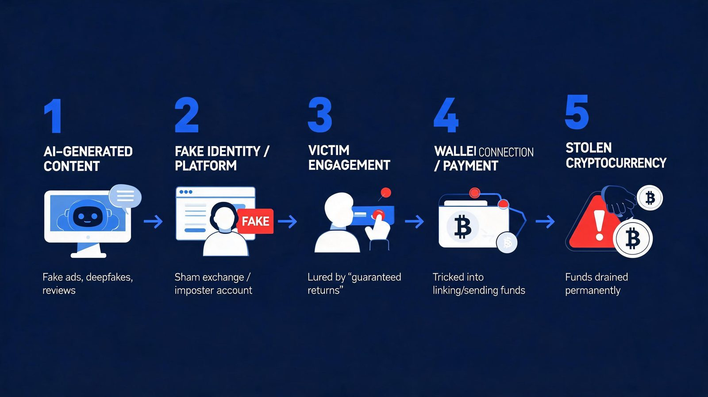
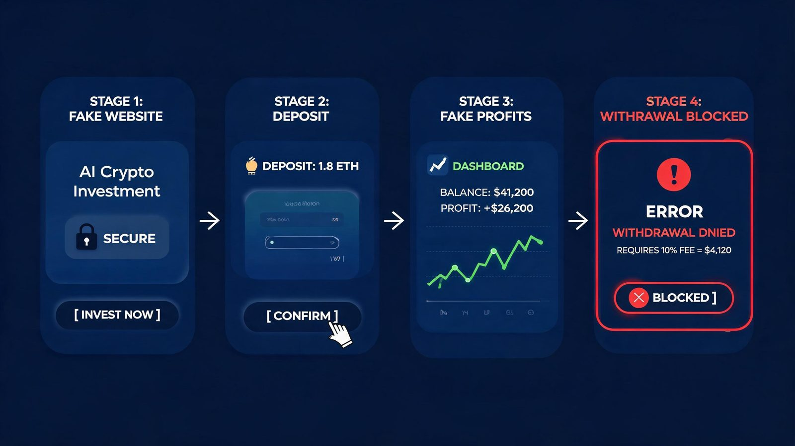
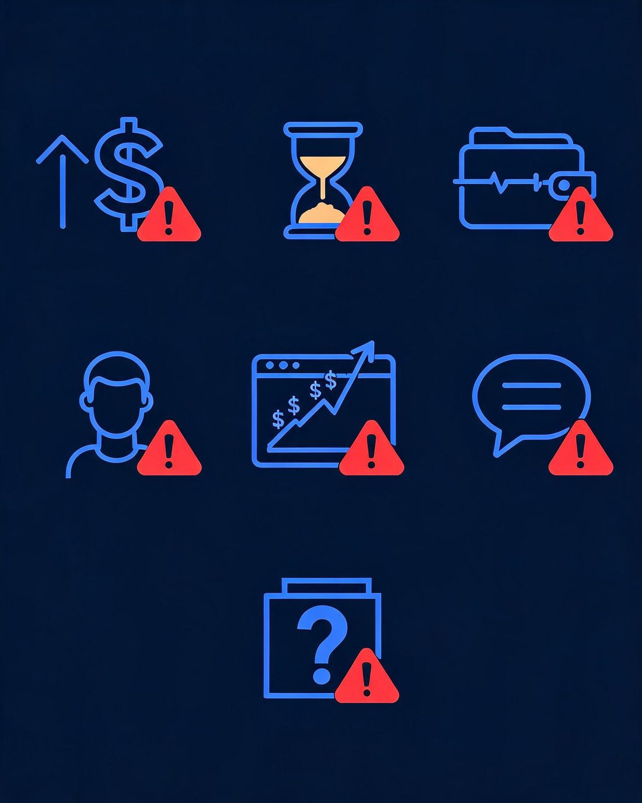
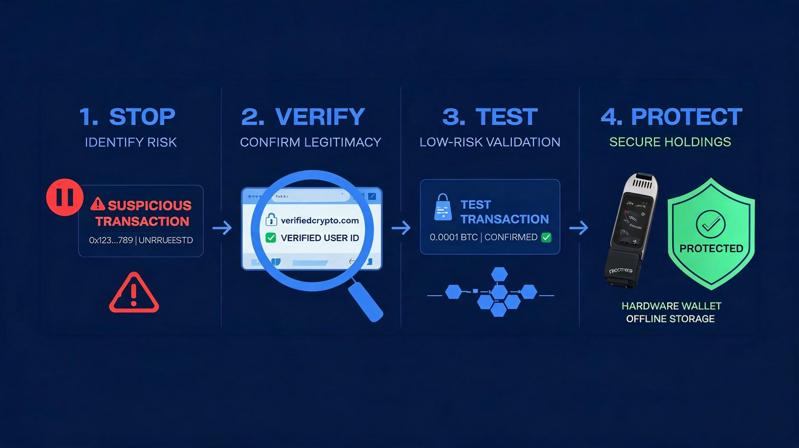
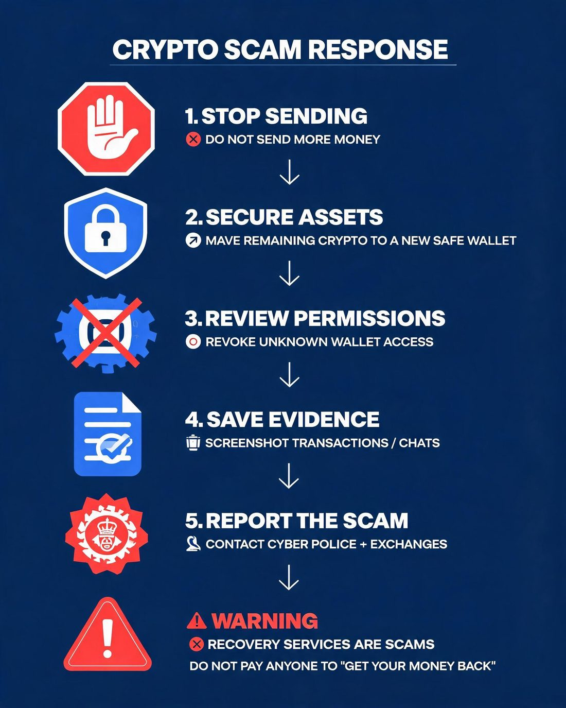
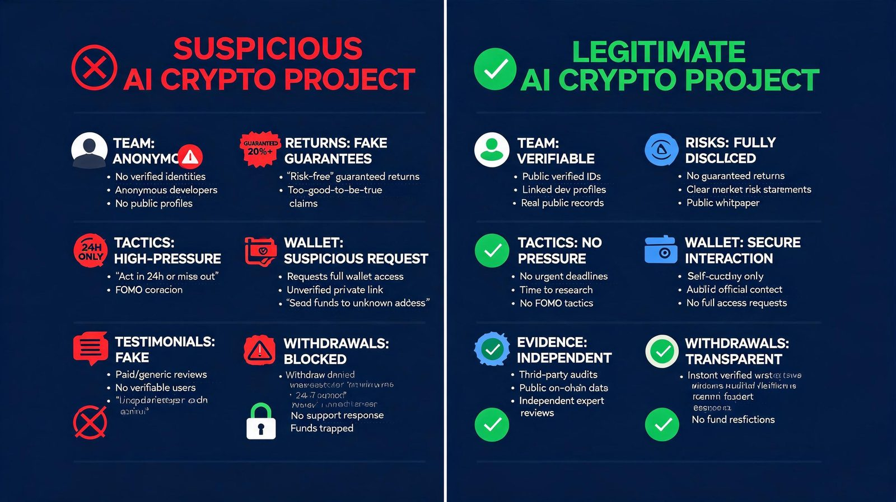

AI Crypto Scams in 2026: How Deepfakes, Fake Bots & Phishing Steal Crypto
AI crypto scams are becoming harder to recognize in 2026.
Scammers can now use AI to create convincing deepfake videos, clone voices, generate realistic conversations, build fake investment platforms, and personalize phishing attacks at a scale that was difficult to achieve with traditional scams.
The problem is no longer simply spotting a badly written scam message.
A fake crypto project can now look professional. A fake support agent can sound convincing. A deepfake can make a well-known person appear to promote an investment they have never endorsed.
And the financial consequences can be serious.
Chainalysis estimates that cryptocurrency scams and fraud resulted in approximately $17 billion in stolen crypto in 2025, while scams with identifiable links to AI tools were, on average, 4.5 times more profitable than those without such links.
That makes one rule more important than ever:
Don't verify the appearance. Verify the source, transaction and destination.
This guide explains how AI crypto scams work in 2026, the warning signs to watch for, and a simple STOP → VERIFY → TEST → PROTECT system you can use before sending crypto.
📑 Table of Contents
- AI Crypto Scams Are Getting Harder to Spot in 2026
- How AI Is Changing Crypto Scams
- 7 Warning Signs of an AI Crypto Scam
- The STOP → VERIFY → TEST → PROTECT System
- What to Do If You Already Sent Crypto to a Scam
- AI Crypto Scams vs. Legitimate AI Crypto Projects
- The Biggest AI Crypto Scam Trends to Watch in 2026
- Frequently Asked Questions
- Final Takeaway
AI Crypto Scams Are Getting Harder to Spot in 2026
Traditional scams often depended on obvious warning signs: bad grammar, suspicious URLs, unrealistic promises or poorly designed websites.
AI is changing that.
Scammers can now automate large parts of the deception process. Chainalysis identifies deepfakes, AI-generated phishing, fake trading platforms, voice cloning, chatbots and customer-support impersonation among the techniques being used against crypto users.
The scale is also changing.
Chainalysis reported that impersonation scams grew by more than 1,400% year over year in 2025, while the average payment to a scam address increased substantially.
The result is a dangerous combination:
AI + social engineering + crypto's fast transactions = highly convincing scams that can move money quickly.
The FBI has also warned that cryptocurrency investment fraud can involve deepfake technology and AI-based trading programs. Its 2025 Internet Crime Report recorded more than $11 billion in reported cryptocurrency-related losses from U.S. complainants.
AI doesn't necessarily make every scam technically sophisticated.
It makes it easier for scammers to make the scam look and sound legitimate.
How AI Is Changing Crypto Scams

1. AI-Generated Deepfake Videos
One of the most visible AI crypto scams involves fake videos of celebrities, CEOs, influencers, politicians or crypto personalities.
The scammer may create a video appearing to show someone announcing:
- A new cryptocurrency
- A token giveaway
- An investment opportunity
- A trading platform
- An exclusive presale
- A limited-time airdrop
The video may look convincing enough to make the viewer lower their guard.
But the important question isn't:
“Does this video look real?”
Ask:
“Did this person actually publish it through their verified official channel?”
AI-generated media can be copied and redistributed across social platforms within minutes.
Don't ask whether the video looks real. Ask whether the claim can be independently verified.
2. AI Voice Cloning
Voice cloning creates another layer of deception.
A scammer can potentially imitate the voice of a known person and use urgency to push a victim toward a financial action.
For example:
“Your wallet has been compromised. Move your funds to this secure wallet immediately.”
The voice may sound familiar.
That doesn't make the instruction legitimate.
The FBI specifically warns that scammers may use deepfake technology and real people as part of cryptocurrency investment fraud.
Never authorize a crypto transaction simply because the caller sounds familiar.
3. AI-Powered Phishing
AI can help scammers create more natural-looking phishing messages.
Instead of an obvious:
“Dear user, your wallet account is danger. Click now.”
You may receive a polished message that appears to come from an exchange, wallet provider, project administrator or customer-support representative.
The message may reference a real event or create a believable reason for urgency.
The dangerous part is that AI can also help personalize the attack.
Chainalysis identifies AI-generated phishing and impersonation as major components of the modern crypto scam ecosystem.
The rule:
Never use the link supplied in an unexpected crypto message.
Open the official website or app independently instead.
4. Fake AI Trading Bots
“AI trading” is an attractive phrase for scammers because it combines two powerful ideas:
Artificial intelligence + automated profits.
Fake platforms may claim that their AI algorithm can:
- Predict crypto prices
- Trade automatically
- Generate guaranteed returns
- Identify market opportunities
- Beat professional traders
- Produce passive income
Some may even show a professional dashboard with charts and apparently profitable trades.
But a dashboard is not proof that the underlying trades are real.
The FBI lists AI-based trading programs among investment-fraud pitches, while Chainalysis identifies fake investment bots and fraudulent automated trading platforms as common AI-powered crypto scam formats.
A visible profit balance does not prove that the money exists or can be withdrawn.
5. Fake AI Crypto Platforms
A scam doesn't always start with a message.
Sometimes the website is the scam.
A fraudulent platform can be designed to look like a legitimate investment company, trading terminal or crypto service.
It may include:
- Professional branding
- Customer support chat
- Fake testimonials
- Account dashboards
- Artificial profit charts
- “AI-powered” explanations
- Deposit instructions
- Withdrawal buttons
The victim deposits crypto and sees their account balance increase.
Then the problems begin.
A withdrawal may suddenly require:
- A tax payment
- A verification fee
- An unlock fee
- Additional deposits
- A security deposit
A crypto platform asking you to pay an additional “unlock” or “tax” fee before withdrawing your money deserves extreme skepticism.

6. Fake Airdrops and Token Launches
AI can also help scammers produce convincing promotional material around fake tokens.
A fake airdrop may use:
- A copied project website
- Fake social accounts
- AI-generated promotional videos
- Fake community members
- Impersonated founders
- Look-alike domains
The goal is usually simple:
Get the victim to connect a wallet or authorize a transaction.
This is particularly dangerous because connecting a wallet is not always equivalent to simply “logging in.”
Certain malicious approvals can give a scammer permission to interact with assets.
Approval phishing has become a major crypto-fraud concern. In 2026, Chainalysis described operations in which victims were socially engineered into granting criminals permissions that could be used to drain wallets.
7. AI Customer-Support Impersonation
Imagine receiving a message saying:
“We detected suspicious activity on your exchange account.”
The person claims to be from customer support.
They ask you to:
- Confirm your wallet address.
- Move funds to a “secure” wallet.
- Share a recovery phrase.
- Click a verification link.
- Install software.
This is one of the most dangerous patterns because the scam begins with fear rather than greed.
Chainalysis documented a major cryptocurrency impersonation campaign in which attackers posed as Coinbase customer-service representatives and convinced victims to move crypto to wallets controlled by scammers.
A legitimate support representative should not need your seed phrase.
7 Warning Signs of an AI Crypto Scam
AI-generated content can make a scam look legitimate.
That's why you need to look beyond appearance.

1. Guaranteed or Unrealistic Returns
Be extremely skeptical of claims such as:
- “Guaranteed 10% daily”
- “Zero-risk AI trading”
- “Guaranteed Bitcoin profits”
- “Our algorithm never loses”
- “Turn $500 into $10,000”
Crypto markets are volatile.
A promise of guaranteed high returns combined with urgency is a major red flag.
2. Pressure to Act Immediately
Scammers want to reduce the time available for independent verification.
Watch for:
- “Offer expires tonight.”
- “Only 20 spots remaining.”
- “Send funds within 10 minutes.”
- “Don't tell anyone.”
- “Your account will be closed.”
- “This is your final opportunity.”
The FBI recommends slowing down and taking time to assess potential scams rather than responding to pressure.
Urgency is not proof.
3. Someone Wants You to Connect Your Wallet
A wallet connection can be legitimate.
But you should know exactly:
- Which website you're connecting to
- Which contract you're interacting with
- What permissions you're granting
- What transaction you're signing
Never connect your main wallet to an unfamiliar site simply because someone sent you a link.
4. A Celebrity or Founder Appears to Promote It
A famous face is not verification.
Ask:
Can I find the same announcement on the person's official, independently verified account?
If the only evidence is a reposted video, screenshot or anonymous social account, treat it as unverified.
5. The Dashboard Shows Perfect Profits
A website can display any number it wants.
Your account showing:
$10,000 → $18,400
doesn't prove that $18,400 exists on-chain.
The real test is whether funds can be independently verified and withdrawn without suspicious additional payments.
6. “Support” Contacts You First
Be suspicious when someone unexpectedly claims to be:
- Exchange support
- Wallet support
- Project administrator
- Blockchain investigator
- Recovery specialist
Verify them independently through the organization's official website or app.
Do not trust the contact details supplied by the person contacting you.
7. The Company, Token or Team Cannot Be Independently Verified
Before sending money, investigate:
- Official domain
- Domain spelling
- Official social accounts
- Team identity
- Token contract
- Blockchain activity
- Independent reporting
- Project documentation
- Withdrawal history
If everything points back to the same website and the same anonymous social accounts, you haven't independently verified anything.
Our step-by-step guide to researching cryptocurrency market news before making investment decisions walks through this verification process in more depth.
The STOP → VERIFY → TEST → PROTECT System
This is the simplest way to approach suspicious crypto opportunities.

STEP 1: STOP
Don't send money.
Don't click the link.
Don't connect your wallet.
Don't sign a transaction.
Don't share your seed phrase.
Don't let the other person create urgency.
The first objective is to break the scammer's momentum.
STEP 2: VERIFY
Now investigate independently.
Verify the website
Don't use the URL provided in the message.
Search for the organization's official website separately.
Check:
- Exact domain spelling
- HTTPS
- Official documentation
- Contact information
- Official social accounts
But remember:
A professional-looking website is not proof.
Verify the person
If someone claims to be a founder, employee or support agent, don't verify them through the same communication channel.
Find the company's official website.
Use the official contact method listed there.
Verify the announcement
If a celebrity, exchange, founder or project allegedly announced something:
Find the announcement through their independently verified official channels.
A screenshot is not sufficient proof.
A repost is not sufficient proof.
A deepfake video is not sufficient proof.
Verify the token
If you're considering buying a token, locate its contract address through an authoritative project source and independently cross-check it.
Don't assume that the first token with the correct name is the legitimate one.
Scammers can copy:
- Names
- Logos
- Ticker symbols
- Websites
- Social accounts
STEP 3: TEST
Before committing meaningful funds, test the actual mechanics.
Ask:
- Can the transaction be independently verified?
- Can a small amount be deposited and withdrawn normally?
- Does the project require suspicious additional payments to release funds?
- What exactly am I signing in my wallet?
- What permissions am I granting?
Testing doesn't make a scam safe.
It simply gives you another opportunity to discover a problem before exposing more funds.
For wallet interactions, understand the transaction and approval you're signing rather than blindly clicking “Confirm.”
STEP 4: PROTECT
If everything checks out, protect yourself anyway.
Use:
- Hardware wallets for significant long-term holdings
- Strong, unique passwords
- Two-factor authentication
- Separate wallets for different risk levels
- Limited approvals where appropriate
- Transaction notifications
- Regular wallet-approval reviews
And never share your seed phrase/private key with anyone.
Not support.
Not a founder.
Not an “investigator.”
Not an AI assistant.
Not a recovery specialist.
Anyone asking for it should be treated as a major security threat.
If you're storing significant crypto long-term, our guide to the best hardware crypto wallets for secure storage in 2026 compares the main options.
What to Do If You Already Sent Crypto to a Scam
Act quickly, but don't panic.

1. Stop Sending More Money
Don't pay a second “verification,” “tax,” “unlock” or “recovery” fee simply because the scammer says it will release your funds.
The FBI specifically advises cryptocurrency-fraud victims to stop sending money and report the incident.
2. Secure Your Remaining Assets
If you believe your wallet or credentials may be compromised, move remaining assets to a secure wallet where appropriate.
Change compromised passwords.
Enable or reset two-factor authentication where necessary.
3. Review Wallet Approvals
If you connected your wallet to a suspicious website, investigate the permissions and approvals you granted.
For serious incidents, consider getting help from a qualified blockchain-security professional.
4. Save the Evidence
Keep:
- Transaction hashes
- Wallet addresses
- Screenshots
- Emails
- Phone numbers
- Usernames
- Website URLs
- Chat histories
- Payment records
- Dates and times
Do not delete the evidence.
5. Report the Scam
Report the incident to the relevant exchange, wallet provider, platform and law-enforcement or cybercrime reporting channel in your jurisdiction.
The FBI recommends reporting cryptocurrency investment fraud through IC3 in the United States.
6. Beware of Recovery Scams
This is critical.
After losing crypto, you may be contacted by someone claiming:
“We can recover your stolen funds.”
They may ask for an upfront payment.
That can be another scam.
Being victimized once can make you an attractive target for a second fraud attempt.
If you're new to markets, our beginner's guide to cryptocurrency trading covers how to set up wallets and exchanges with security from day one.
AI Crypto Scams vs. Legitimate AI Crypto Projects
| Warning Sign | Potential Scam | Legitimate Project |
|---|---|---|
| Returns | Guaranteed or unrealistic | Risk clearly disclosed |
| Identity | Anonymous or unverifiable | Team can be independently researched |
| Website | Look-alike or recently created | Official presence can be independently verified |
| Trading claims | “AI never loses” | Performance limitations disclosed |
| Support | Unsolicited DMs | Official support channels |
| Wallet | Immediate connection pressure | Clear explanation of interaction |
| Withdrawal | Extra unexplained fees | Transparent terms |
| Proof | Screenshots and testimonials only | Independently verifiable evidence |
| Urgency | “Act now” | No artificial pressure |
| Seed phrase | Requested | Never required |

The key distinction isn't whether a project uses AI.
It's whether its claims, identity, transactions and financial flows can be independently verified.
The Biggest AI Crypto Scam Trends to Watch in 2026
More convincing impersonation
Impersonation is becoming a central component of crypto fraud.
The objective isn't always to convince someone that a fake investment is profitable.
Sometimes it's simply to convince them that the person asking for the money is trustworthy.
Chainalysis reported more than 1,400% year-over-year growth in impersonation scam activity in its 2026 crypto crime analysis.
More automated scam operations
AI lowers the cost of producing personalized messages, fake identities and content at scale.
That means scammers can potentially contact more victims without proportionally increasing their human workload.
More wallet-targeting attacks
Scams are increasingly focused not only on persuading people to transfer crypto but also on getting users to approve malicious transactions.
Approval phishing is an important example of this evolution.
More realistic fake investment experiences
Instead of a simple fake website, scammers can combine:
AI content + fake support + fake dashboards + social proof + impersonation + cryptocurrency payments.
That creates an entire fake financial experience around the victim.
Frequently Asked Questions
What are AI crypto scams?
AI crypto scams are cryptocurrency fraud schemes that use artificial intelligence or AI-generated content to make scams more convincing, scalable or personalized. Examples include deepfakes, voice cloning, AI-generated phishing, fake trading bots and customer-support impersonation.
Are AI trading bots always scams?
No.
The phrase “AI trading bot” alone doesn't prove that something is fraudulent.
But guaranteed returns, unrealistic performance claims, pressure to deposit crypto and unverifiable trading activity are serious warning signs.
How can I identify a crypto deepfake?
Don't rely only on visual or audio quality.
Verify the claim through the person's official channels and independently verify the project, website and transaction instructions.
The source matters more than how convincing the video looks.
Can AI steal cryptocurrency?
AI itself doesn't automatically steal crypto.
Scammers can use AI to create deception that persuades victims to reveal credentials, send funds or approve malicious blockchain transactions.
The human decision remains a critical part of many attacks.
What should I do after sending crypto to a scammer?
Stop sending additional funds, secure your remaining assets, preserve transaction evidence, contact the relevant exchange or wallet provider, and report the incident to the appropriate authorities.
Also be extremely cautious of anyone promising guaranteed recovery.
Are AI-generated crypto investment platforms safe?
AI branding is not evidence of legitimacy.
Evaluate the company, domain, team, claims, token, transaction history, withdrawal process and financial terms independently before committing funds.
What is the safest rule for avoiding AI crypto scams?
Slow down. Verify independently. Test before committing significant funds. Protect your remaining assets.
In short:
STOP → VERIFY → TEST → PROTECT. AI can make a scam look real. It cannot make an unverified claim trustworthy.
Final Takeaway
The biggest change in crypto scams in 2026 isn't simply that scammers have better AI.
It's that appearance is becoming less reliable as a signal of trust.
A video can be fake.
A voice can be cloned.
A support agent can be impersonated.
A trading dashboard can be fabricated.
A website can look professional.
A community can be manufactured.
That's why the best defense isn't becoming an expert at detecting every AI-generated image or video.
It's building a verification habit.
STOP before acting.
VERIFY through independent sources.
TEST the mechanics before committing serious funds.
PROTECT your wallet and remaining assets.
When money is involved, don't trust what looks real. Verify what can be independently proven.
Related Reading
- 9 Best Hardware Crypto Wallets for Secure Storage in 2026
- How to Research Cryptocurrency Market News Before Making Investment Decisions
- How to Start Cryptocurrency Trading: Complete Guide
- CoinDesk vs The Block: Which Crypto News Site Offers More?
- Crypto Shakeout 2026: What the Market Reset Means
The Daily Brief A daily email newsletter delivering the day's trending technology, cryptocurrency, and finance news every morning.